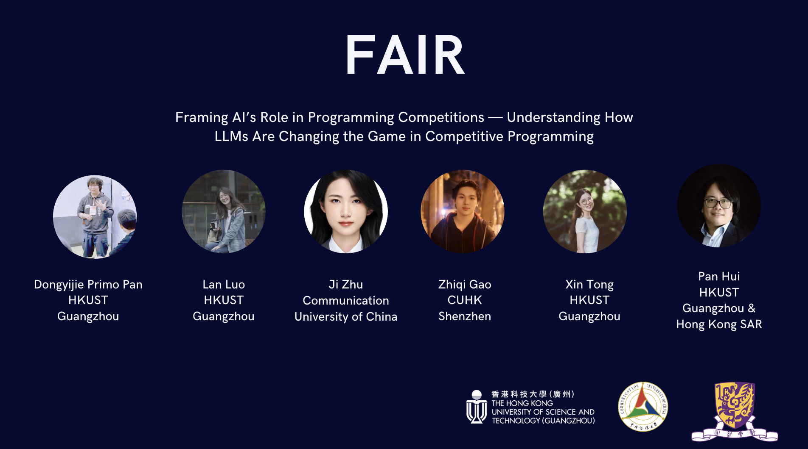

The Team


This paper investigates how large language models (LLMs) are reshaping competitive programming. The field functions as an intellectual contest within computer science education and is marked by rapid iteration, real-time feedback, transparent solutions, and strict integrity norms. Prior work has evaluated LLMs' performance on contest problems, but little is known about how human stakeholders — contestants, problem setters, coaches, and platform stewards — are adapting their workflows and contest norms under LLM-induced shifts. At the same time, rising AI-assisted misuse and inconsistent governance expose urgent gaps in sustaining fairness and credibility. Drawing on 37 interviews spanning all four roles and a global survey of 207 contestants, as well as an API-based crawl of Codeforces contest logs (2022–2025) for quantitative analysis, we contribute: (i) an empirical account of evolving workflows, (ii) an analysis of contested fairness norms, and (iii) a chess-inspired governance approach with actionable measures — real-time LLM checks in online contests, peer co-monitoring and reporting, and cross-validation against offline performance — to curb LLM-assisted misuse while preserving fairness, transparency, and credibility.

Competitive programming (CP) occupies a distinctive niche in computer science education and practice: participants solve algorithmic problems under strict time and resource limits, producing solutions that are immediately judged by automated systems. This ecosystem encompasses not only contestants but also problem setters, coaches, and platform operators who collectively maintain its integrity and educational value. As LLMs demonstrate rapidly improving coding capabilities, the boundaries of acceptable tool use in this high-stakes environment are being renegotiated.
FAIR provides the first systematic, multi-stakeholder investigation of how LLMs are reshaping the competitive programming ecosystem. Rather than focusing solely on model performance benchmarks, we center the lived experiences and evolving practices of the people who constitute this community, offering a more holistic understanding of AI's transformative impact on a knowledge-intensive, norm-governed domain.
We employed a mixed-methods approach covering four key stakeholder groups in the CP ecosystem: contestants, problem setters, coaches, and platform stewards.
Qualitative interviews. We conducted 37 semi-structured interviews across all four roles. Contestant participants ranged from beginners to ICPC/IOI world champions, ensuring diverse perspectives on LLM use and fairness perceptions.
Global survey. A survey of 207 contestants from multiple countries and regions extended our qualitative insights with quantitative data on attitudes, practices, and perceived norms around AI tool use.
Platform data analysis. We analyzed Codeforces rated contest data from 2022–2025, encompassing 336 contests with approximately 4.84 million participations and over 64 million submissions, to align rule texts, user behavior, and governance outcomes.
Phase-dependent LLM use. LLM usage in competitive programming is not concentrated during formal contests. Most contestants primarily use models during daily training and post-contest review — for understanding problem statements, explaining solution approaches, debugging code, or performing language-level rewrites. Direct use of LLMs during live contests is widely rejected.
Skill-level divergence. Surveys and interviews consistently show that participants view in-contest LLM use as unfair, though opinions diverge on the acceptability of translation, lightweight auto-completion, and pre-contest preparation. Notably, beginners tend to use LLMs more frequently and perceive greater efficiency benefits, while experienced contestants exercise greater restraint.
Bounded tool adoption by organizers. Problem setters and organizers have gradually incorporated LLMs into low-creativity, repetitive workflows — such as multilingual editorial generation, boilerplate code migration, data validation, and pre-competition "AI test runs" to assess problem risk. However, they uniformly reject generative AI in the ideation and core design phases, viewing it as a threat to originality and competitive value.
Governance tensions. Contestants strongly endorse and are willing to comply with platform-defined AI use rules and support post-hoc disclosure and transparency mechanisms, yet their trust in platforms' ability to enforce these rules accurately remains notably low. Platform data further shows that official penalty rates have been consistently low and have not significantly increased following the release of explicit AI policies.
FAIR argues that competitive programming should be viewed as a socio-technical system requiring ongoing governance rather than a one-time human vs. machine contest. The paper emphasizes the importance of layered governance, including:
(1) Clear and auditable rule boundaries that distinguish acceptable from impermissible AI use; (2) A combination of technical detection and human review for enforcement; and (3) Community-participatory oversight mechanisms that involve stakeholders in rule-making processes.
Beyond the CP domain, FAIR provides the HCI community with a concrete case study of complex human-AI collaboration ecosystems — demonstrating how design decisions, workflow restructuring, and institutional governance intertwine when generative AI enters high-stakes, norm-intensive practice domains. This work offers empirical evidence and methodological insights for understanding and designing fairness, accountability, and social trust in AI-mediated contexts.